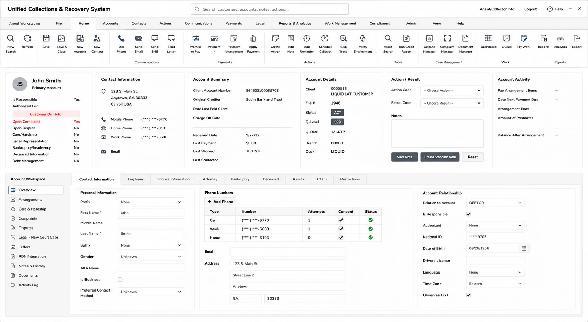
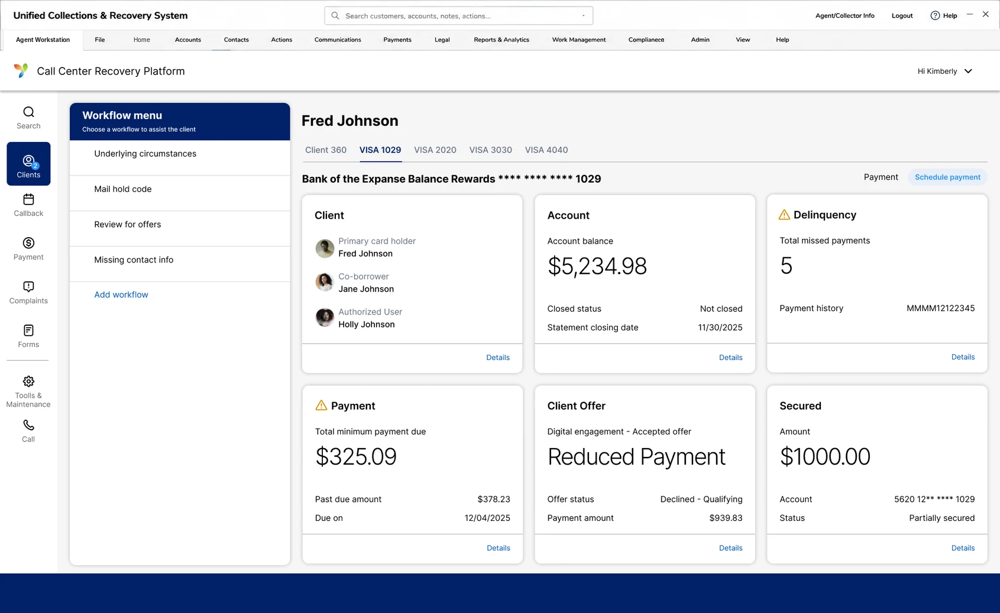
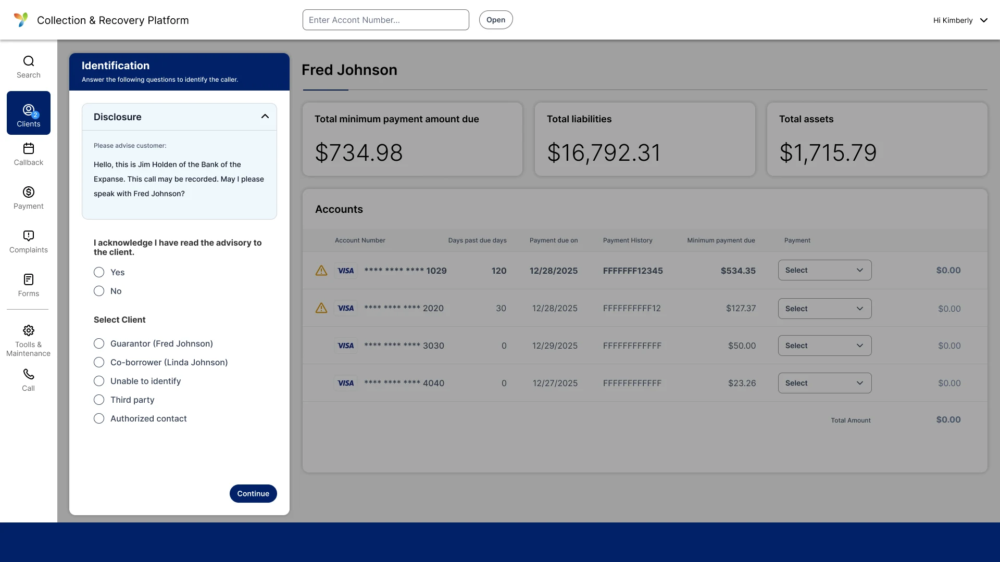
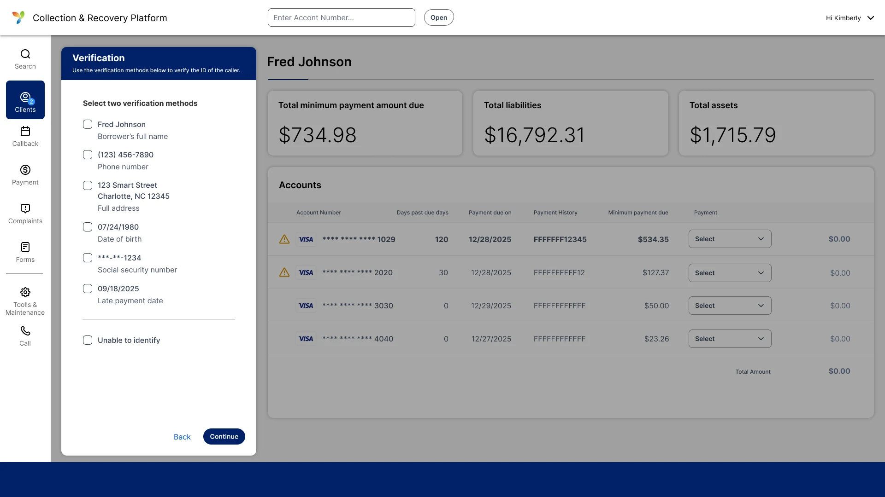
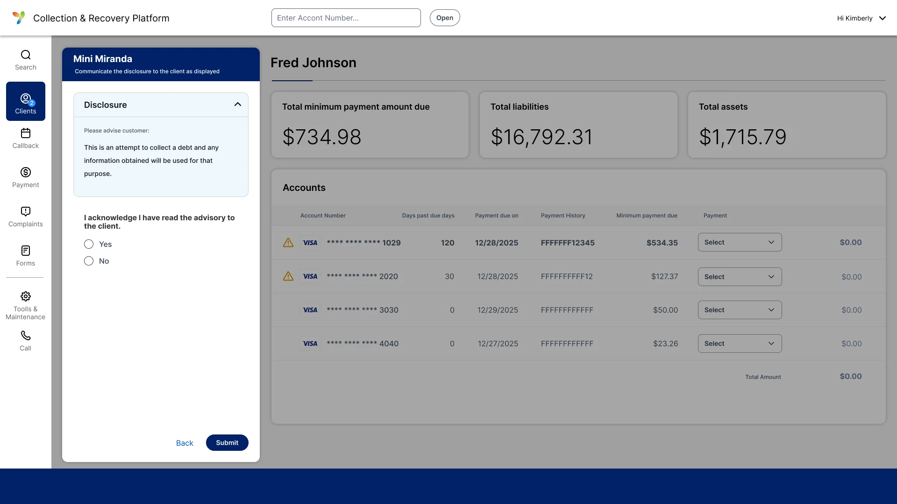
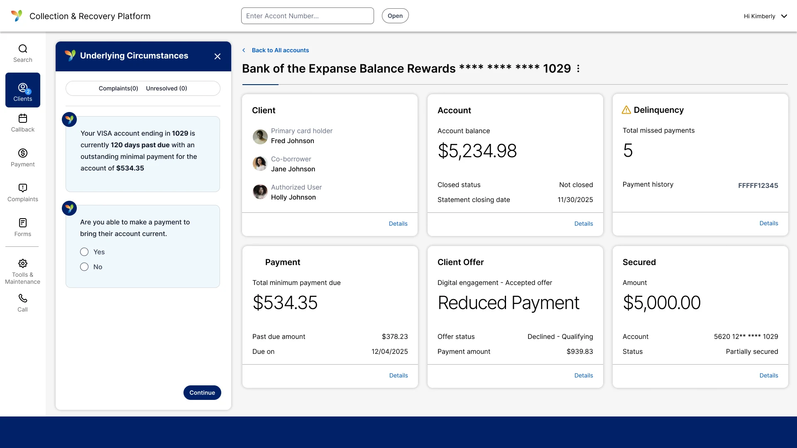
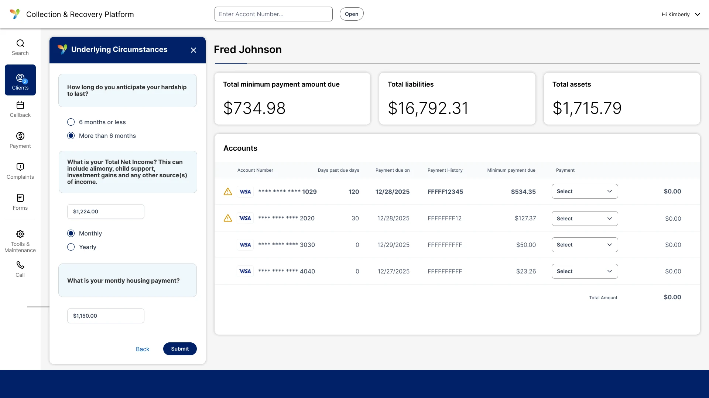

Bank of America · Financial Services
Simplifying the work, not just the interface.
Reframing a legacy application modernization initiative into a guided, context-aware collections experience that embeds business expertise into the workflow, reduces cognitive complexity, and empowers agents to focus on the customer.

Estimated impact & results
27%
Lower average handle time
50%
Fewer assisted resolutions
Calls where a senior agent had to step in to help close
25%
Fewer escalations
Calls handed off to a senior agent
Estimated from one month of call reporting at a single call center, by identifying which calls the guided workflow would affect, based on call type and whether the call required an assisted resolution.
At a glance
The problem
Agents were absorbing the business’s complexity, interpreting rules, programs and eligibility live on difficult calls. The planned redesign modernized the screen, not the decisions.
My role
Co-product designer and individual contributor, backfilling an open position after the product direction was set. Partnered with Product to observe real collections calls.
Key decision
Shift from simplifying the interface to simplifying the work: a guided workflow with exception paths, delivered as a tab inside the legacy product.
Outcome
A research-informed direction aimed at lower handle time, fewer senior-agent assisted resolutions and escalations, and faster novice proficiency, with a phased path to sunset the legacy product.
Design challenge
How might we reduce the complexity of collections work while enabling agents to deliver consistent, efficient, and empathetic customer experiences?
01 · Situation
An established solution to an undefined problem
I joined the Collections Workstation team as a co-product designer and individual contributor, backfilling an open position, after the product team had already established its design direction.
The existing workstation was a legacy, Windows ribbon-based application that presented agents with a highly data-dense account view. The product team’s vision, informed primarily by market research, was to modernize the experience through a card-based interface and simplified navigation. The underlying philosophy emphasized empathy, agent flexibility, and letting customers drive the conversation.
However, UX had limited autonomy to conduct formative research, and the proposed experience had not been sufficiently informed by direct observation of how agents actually performed their work.
The collections industry also faced significant workforce retention challenges, making dependence on extensive training and institutional knowledge an important operational concern.
Where we started
Representative mockup

The requested direction
Representative mockup

02 · Task
Looking beyond interface modernization
My initial responsibility was to execute the established product vision and translate it into a modern, intuitive workstation. But I saw an opportunity to understand the relationship between agent workflows, customer needs, and business objectives more deeply. My objectives evolved to include:
- Establishing opportunities for customer discovery within existing organizational constraints.
- Understanding agent behaviors, decision-making processes, and operational pain points.
- Identifying whether the proposed interface addressed the underlying problems.
- Reducing cognitive load without compromising agent autonomy.
- Connecting the experience strategy to measurable business objectives.
As an individual contributor, I needed to influence product direction through evidence, collaboration, and design rationale rather than positional authority.
03 · Action
From observing the work to reframing the problem
1. Established opportunities for customer discovery
While continuing to execute the established direction, I built a relationship with a product partner and advocated for greater exposure to customers and their operating environments. That partnership led to recurring sessions observing real collections calls and how agents navigated customer interactions.
These observations grounded our design decisions in actual behavior rather than assumptions about how agents should work.
2. Identified systemic barriers to agent effectiveness
Agents were managing significant complexity beyond the interface itself: interpreting business rules, assistance programs, eligibility requirements, and individual circumstances, all while handling emotionally challenging conversations.
What I observed
Agents created external notes, scripts, and workarounds to accelerate their work.
Agents relied heavily on recalling extensive training.
Complex customer circumstances frequently overwhelmed less experienced agents.
Customers with comparable circumstances could receive inconsistent resolution options.
Difficult interactions often required senior-agent intervention, consuming extra operational capacity.
The organization was transferring much of its business complexity onto the agent.
The discovery: where complexity lived
Original experience: the agent absorbs the complexity of the business
Agent
Interprets every rule, recalls every option, and manages the conversation, all at once
3. Reframed the problem
Modernizing the interface and simplifying navigation would not necessarily simplify the decisions agents had to make. The fundamental problem wasn’t information density or navigation. It was the cognitive burden of interpreting business rules, evaluating circumstances, and identifying appropriate resolutions in real time.
The emphasis on empathy was well-intentioned, but agents were being asked to manage emotionally demanding conversations while simultaneously solving complex decision problems.
The reframe
Simplify the interface
Simplify the work
4. Proposed a guided orchestration strategy
I proposed shifting the interaction model from predominantly free-form navigation to a guided, workflow-driven experience supported by an orchestration layer. As information about the customer is gathered, the system progressively narrows the decision space and surfaces relevant next actions based on circumstances, business rules, and program eligibility.
Rather than requiring agents to recall every possible resolution, the experience brings applicable options directly into their workflow. Because not every scenario can be anticipated, agents keep a path to direct navigation for complex exceptions, including the legacy view itself. This hybrid approach balances operational consistency with agent autonomy.
The strategy: redistribute cognitive responsibility
Orchestration layer
Narrows the decision space as information is gathered and surfaces eligible next actions
Agent
Applies human judgment and gives full attention to the customer
Exception path
The legacy view stays available for complex scenarios the new view doesn’t yet support
Rollout: a new view inside the legacy product
Introduce the new experience without forcing a hard cutover
The new solution was delivered as a tabbed view that opens inside the legacy product. New agents are trained on the new view, while the legacy view stays available to expert agents who handle complex scenarios the new view doesn’t yet support.
This let the organization start reducing training and onboarding burden right away without taking capability away from its most experienced agents. As the new view covers more scenarios, reliance on the legacy view shrinks, with the goal of eventually sunsetting the legacy product.
Legacy product shell
New tab
New view
Where new agents are trained. Covers the common, well-understood scenarios.
Existing tab
Legacy view
Stays available to expert agents for complex scenarios the new view doesn’t yet support.
Goal: sunset the legacy product as the new view takes on more scenarios.
The new view in action
Scenario: “Customer can’t make their normal payment.”
A walkthrough of the guided workflow from verification to resolution. Each step narrows the decision space, so only the questions and options that apply to this customer appear.
Agent verifies identity and delivers required disclosures
The agent confirms the caller’s identity claim, delivers the required call-recording disclosure, and selects who is on the line before any account data is surfaced.

System requires two-factor verification before any account data is shown
Two independent verification methods are required before proceeding, reducing the risk of releasing account information to the wrong party.

Agent delivers the Mini Miranda disclosure before continuing
The required debt-collection disclosure is presented as a guided step, with agent acknowledgment captured before the call can continue.

Underlying Circumstances opens directly on the delinquent account
The prompt surfaces automatically once an account shows delinquency, starting with whether the customer can bring it current.
Agent opens the specific account before answering
The same prompt follows the agent into the account-level view: full balance, delinquency, and offer history in place before a decision gets made.

Agent confirms the customer can’t make the payment

Agent documents what changed in the customer’s situation
Selectable, reportable categories replace free-text notes: high debt level, reduced income, unexpected expenses, oversight, or unable to obtain.

System asks structured follow-up questions to size the hardship
Expected duration, total net income, and monthly housing payment: the detail eligibility needs, without the agent having to know what to ask.

Eligibility rules run behind the scenes
System auto-evaluates eligibility
Payment history · Account standing · Program rules · Delinquency stage · Prior hardship history
Only qualifying payment options appear, and the agent schedules the resolution
The programs shown reflect what this customer is actually eligible for; the agent selects one and schedules it without leaving the account.

5. Defined experience principles
Standardize the decision-making, not the human conversation.
01
Guide by default
Surface relevant next actions within the context of the customer interaction.
02
Preserve autonomy
Let agents navigate independently when circumstances require it.
03
Embed institutional knowledge
Reduce dependence on memorized training and external workarounds.
04
Progressively reduce complexity
Narrow available options as customer information becomes known.
05
Enable empathy
Reduce decision burden so agents can give more attention to the customer.
The strategic transformation
From interface modernization to workflow transformation
| Dimension | Original direction | Proposed direction |
|---|---|---|
| Design focus | Interface modernization | Workflow transformation |
| Interaction model | Free-form navigation | Guided flexibility |
| Information architecture | Card-based organization | Contextual, task-driven actions |
| Decision-making | Agent-dependent | System-supported |
| Expertise | Memorized training | Embedded institutional knowledge |
| Flexibility | Unrestricted navigation | Guided workflows with exception paths |
| Empathy | Expected agent behavior | Supported by reduced cognitive load |
| Business value | Improved usability | Operational scalability and consistency |
04 · Result
A research-informed alternative to the original direction
My contribution helped reframe the Collections Workstation initiative from a visual modernization effort into an opportunity to improve how collections work is performed. Through customer discovery and systems thinking, I identified the limits of an interface-first strategy and proposed an interaction model that connected agent needs with operational objectives.
Rather than designing a system that assumed every agent had expert-level knowledge, I proposed embedding that expertise directly into the experience.
The direction it established
Reducing average call handling time
Improving resolution consistency across comparable circumstances
Fewer assisted resolutions, so senior agents step in less often
Fewer escalations handed off to senior agents
Accelerating novice-agent proficiency
Reducing dependence on extensive training
Improving agent confidence and independence
Creating conditions for more empathetic customer interactions
A phased path to sunsetting the legacy product
Measurement framework
Evaluated on operational performance, not just usability
The proposed experience is designed to be measured against the outcomes the business already tracks. The estimated figures come from one month of call reporting at a single call center, identifying which calls the guided workflow would affect, based on call type and whether the call required an assisted resolution. They are estimates, not measured results.
Primary signal
Assisted resolution rate
↓ 50%
How often a senior agent has to step in to help an agent finish a call. This is the metric the guided workflow targets most directly: with eligibility rules and next steps in the flow, agents need far less live help to reach a resolution on their own.
Secondary signal
Senior-agent escalation rate
↓ 25%
How often a call is handed off to a senior agent entirely. Escalations are driven more by complaints and disputes than by agent experience, so this rate moves less than assisted resolutions.
What this project demonstrates
Leadership without a leadership title
Organizational influence
Created opportunities for customer discovery despite limited UX autonomy and an established product direction.
Strategic problem framing
Distinguished the symptoms of interface complexity from the underlying problem of decision complexity.
Systems thinking
Connected workforce retention, business rules, cognitive load, training, operational efficiency, and customer experience.
Experience strategy
Proposed a scalable interaction model balancing standardization with human judgment and flexibility.
Business acumen
Connected UX decisions to operational costs, workforce productivity, and resolution quality.
Leadership without authority
Influenced the direction of a product initiative while operating as an individual contributor.